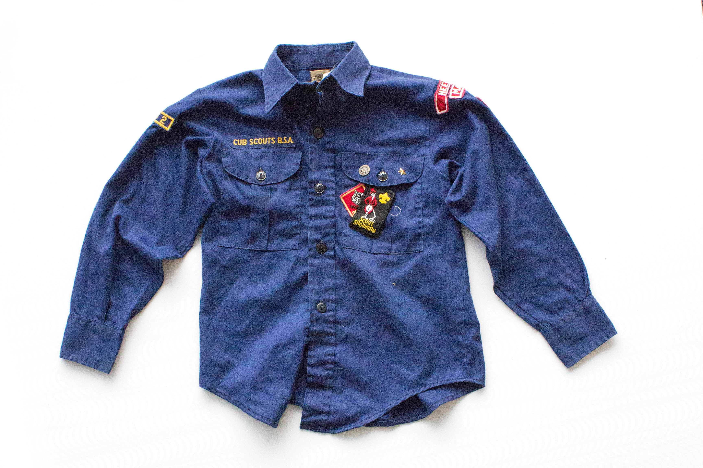

I sat in the middle of my bedroom floor and surveyed the disaster. All my dresser drawers were on the floor, the walls had been stripped of their posters, and clothes were strewn everywhere. My childhood room was almost unrecognizable. My possessions were crammed into old beat-up cardboard boxes, and piles of clothing were growing in every direction.
“Do you want to bring your old Strikers sweatshirt?” my mom asked from somewhere behind me.
I hesitated for a second, before responding, “No… Donate.” It went sailing over my head and landed pathetically on the side of a swelling pile. It slid and revealed the peeling logo of my middle school soccer team.
“The Michigan team will probably give you one anyway,” she reasoned. “Celtics jersey? Number five? Take it or leave it?”
“Take it,” I responded. She tossed it at the back of my head and continued to rifle through the items on my closet floor. I picked up the jersey, folded it and threw it in the top of the box marked clothes.
“Aww, your old Scouts uniform!” She walked out with the vest in hand. “Do you remember this badge? For this one, we spent hours in the freezing cold looking at constellations. Even when it was cloudy. Just so you could add to your sky log.”
I got up and walked over to get a closer look. “Oh yeah. And this one was from that time we went camping and it poured the entire night.” The vest probably hadn’t fit in 6 or 7 years. I flipped it over and ran my fingers over the den number.
“Want to bring it along, Max?” she asked, “You could hang it somewhere in your room.”
“No Mom, that’s weird. No one does that,” I scoffed.
“Alright,” she shrugged. She balled up the shirt and flung it onto the discard pile before turning back to the closet.
“Well wait…” I retrieved the vest and shook it out a little. “I didn’t mean I wanted to throw it away,” I clarified.
“We aren’t going to hang on to something that doesn’t even fit. If you want it for the memories, you should take it with you.”
She walked back into the closet to rummage.
I stuck a hand through the arm and turned it over a couple of times. A lot of work had gone into this little relic. I used to show off all my new badges to my family as I earned them. Most of my closest friends were kids I met through Cub Scouts right after moving to Needham. It’s not like UMich could replace my Scout vest the way it could some random soccer sweatshirt. I invested countless hours in acquiring my pins and badges. I learned how to sew just so I could stitch some of these on. I wasn’t going to just toss it in the bin. I pulled the astronomy pin off the left shoulder and shoved it in my pocket. I folded the vest and placed it on the donate pile.
“You can’t donate that, Max. Nobody can use an old Cub Scout uniform,” my mom said looking at the new addition. I shrugged. She raised her eyebrows, but then seemed to decide not to push the issue. Maybe she knew she wasn’t going to convince me to throw away all my hard work. Or maybe she didn’t want to see it cast away for good either.
“Fine. How about this shirt?” she asked holding up a red crew neck.
“Take it,” I responded. And we continued to sort: discard, donate, keep.